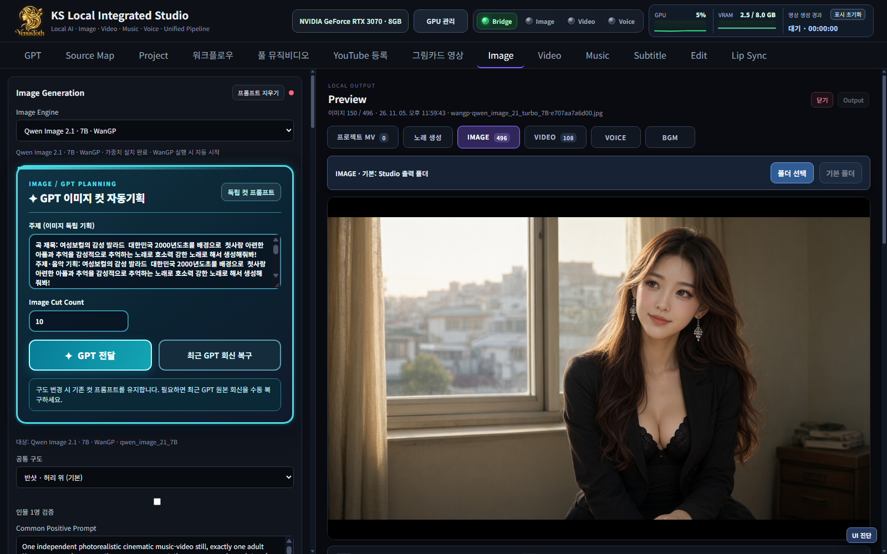
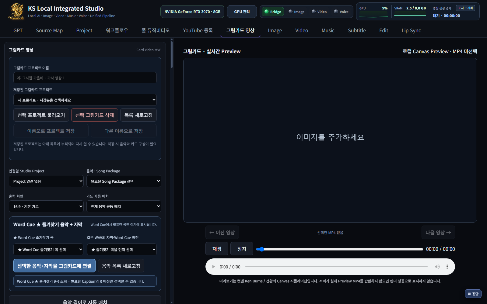

Music with emotion
곡의 주제와 분위기를 중심으로 음악, 가사, Word Cue 자막을 연결하고 다음 제작 단계에 활용합니다.
음악의 감정이 이미지가 되고, 장면의 움직임이 하나의 이야기로 완성되는 곳.
VenusToth Studio는 음악·이미지·영상·자막·편집을 연결하는 로컬 우선 AI 크리에이티브 스튜디오입니다. 자동 제작의 편리함과 장면별 수동 제어를 함께 제공합니다.
ONE STUDIO. ENDLESS CREATION.
서로 다른 생성 도구를 오가며 콘텐츠를 다시 만드는 대신, 창작 과정을 하나의 워크플로우로 연결합니다.
곡의 주제와 분위기를 중심으로 음악, 가사, Word Cue 자막을 연결하고 다음 제작 단계에 활용합니다.
장면별 이미지와 캐릭터 참조 정보를 관리하고, 원하는 컷만 확인·교체·재생성합니다.
I2V·T2V 기반 장면 영상, 프롬프트와 생성 설정을 단계별로 다룹니다.
자막, 컷, 워터마크, 오디오, 렌더링까지 미리 보고 변경할 수 있습니다.
INSIDE THE REAL STUDIO
실행 중인 VenusToth Studio에서 직접 캡처한 화면입니다. 이미지 생성과 그림카드 편집 흐름을 확인할 수 있습니다.


실제 데스크톱 Studio 화면이며, 개발 버전·설정 및 콘텐츠에 따라 UI가 달라질 수 있습니다.
FROM PROMPT TO PREMIERE
자동화와 장면 단위 편집을 함께 사용하는 콘텐츠 제작 흐름을 지원합니다.
주제·스토리·스타일 구성
음악·가사·오디오
장면 이미지·캐릭터
비디오·컷별 모션
자막·MP4·채널 업로드
OWN YOUR CREATIVE PROCESS
작업 결과를 검토하고 직접 선택한 파일을 게시합니다. YouTube 업로드와 TikTok 게시 API 연동은 계정별 승인·권한을 전제로 독립적으로 동작하도록 설계되어 있습니다. 사용자 확인 없이 자동 게시하지 않습니다.
Explore our YouTube ↗VENUSTOTH STUDIO